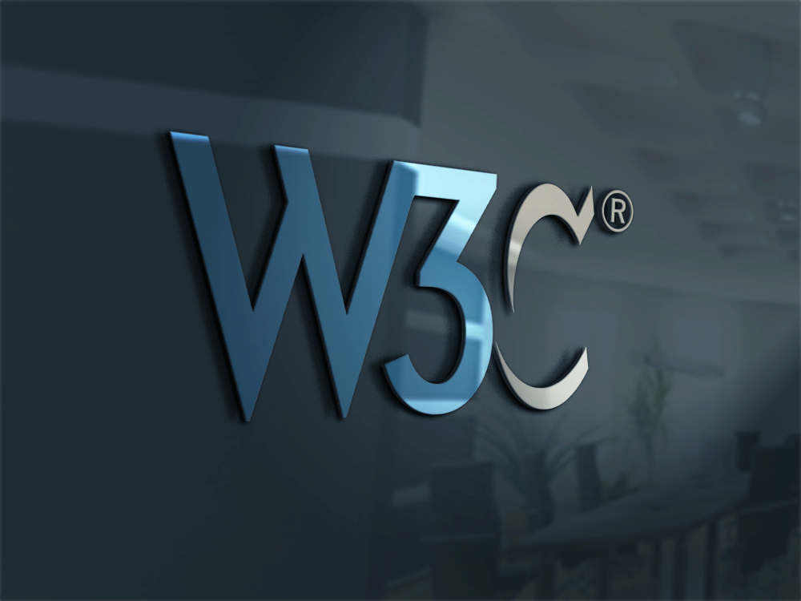

The World Wide Web Consortium is the main international standards
organization for the World Wide Web. Founded in 1994 and currently led by Tim
Berners-Lee, the consortium is made up of member organizations that maintain
full-time staff working together in the development of standards for the World
Wide Web.
- HISTORY OF W3C:
The World Wide Web Consortium (W3C) was founded in 1994 by Tim Berners-Lee after he left the European Organization for Nuclear Research (CERN) in October, 1994. It was founded at the Massachusetts Institute of Technology Laboratory for Computer Science (MIT/LCS) with support from the European Commission, the Defense Advanced Research Projects Agency (DARPA), which had pioneered the ARPANET, one of the predecessors to the Internet.It was located in Technology Square until 2004, when it moved, with CSAIL, to the Stata Center.
The organization tries to foster compatibility and agreement among industry members in the adoption of new standards defined by the W3C. Incompatible versions of HTML are offered by different vendors, causing inconsistency in how web pages are displayed. The consortium tries to get all those vendors to implement a set of core principles and components that are chosen by the consortium.
It was originally intended that CERN host the European branch of W3C; however, CERN wished to focus on particle physics, not information technology. In April 1995, the French Institute for Research in Computer Science and Automation (INRIA) became the European host of W3C, with Keio University Research Institute at SFC (KRIS) becoming the Asian host in September 1996.Starting in 1997, W3C created regional offices around the world. As of September 2009, it had eighteen World Offices covering Australia, the Benelux countries (Netherlands, Luxembourg, and Belgium), Brazil, China, Finland, Germany, Austria, Greece, Hong Kong, Hungary, India, Israel, Italy, South Korea, Morocco, South Africa, Spain, Sweden, and, as of 2016, the United Kingdom and Ireland.
In October 2012, W3C convened a community of major web players and publishers to establish a MediaWiki wiki that seeks to document open web standards called the WebPlatform and WebPlatform Docs.
In January 2013, Beihang University became the Chinese host
- W3C RECOMMENDATION:
This is the most mature stage of development. At this point, the standard has undergone extensive review and testing, under both theoretical and practical conditions. The standard is now endorsed by the W3C, indicating its readiness for deployment to the public, and encouraging more widespread support among implementors and authors.
Recommendations can sometimes be implemented incorrectly, partially, or not at all, but many standards define two or more levels of conformance that developers must follow if they wish to label their product as W3C-compliant